Choose a base from the dropdown menu.
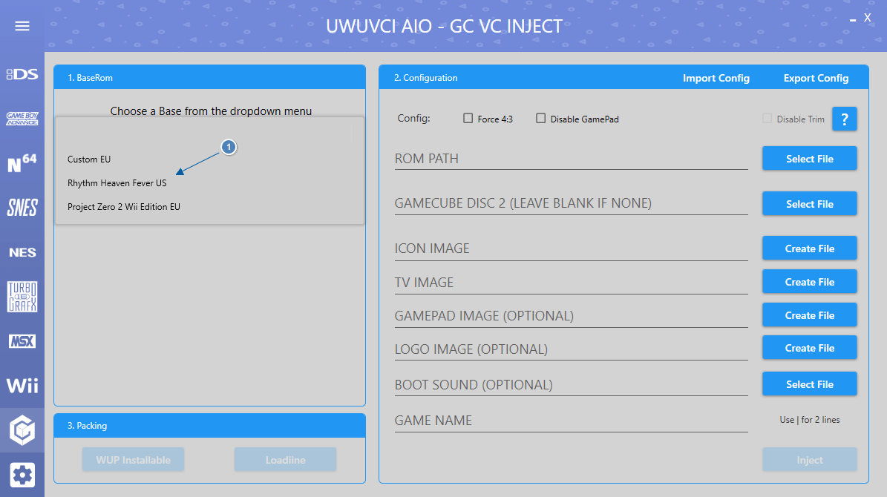
If this is your first inject enter the WiiU common Key or you can use your otp.bin from your nand backup.
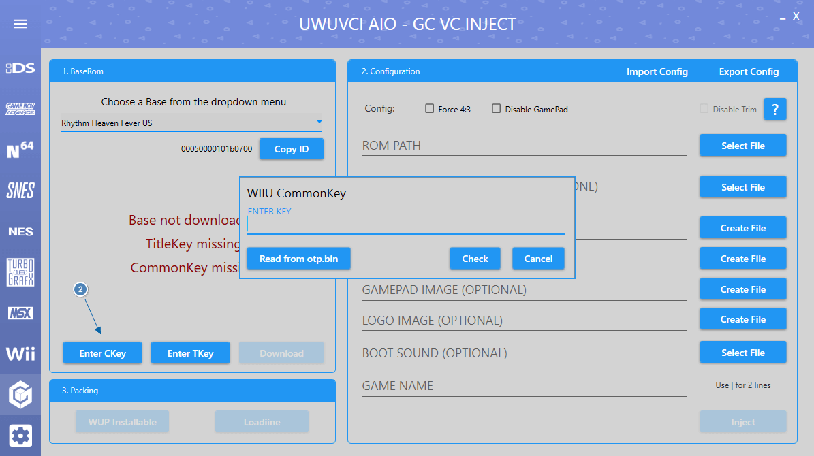
Enter the Title Key for the base you selected.
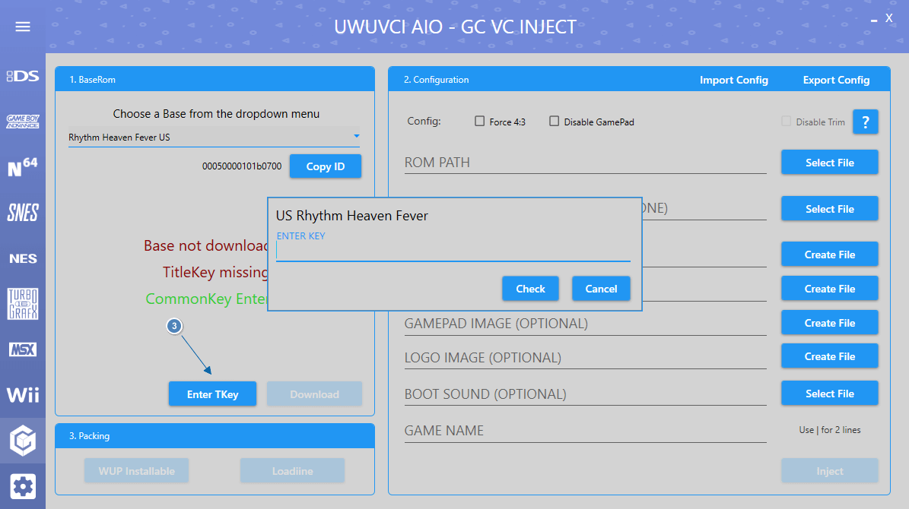
Click Download and wait for the Base to finish downloading.
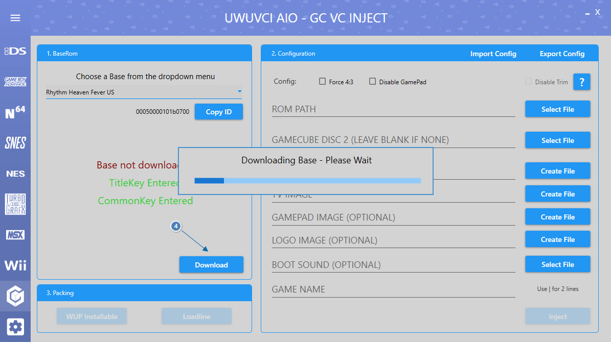
Select File next to Rom path and choose the .iso, .gcm, .nkit.iso or .nkit.gcz that you want to inject.
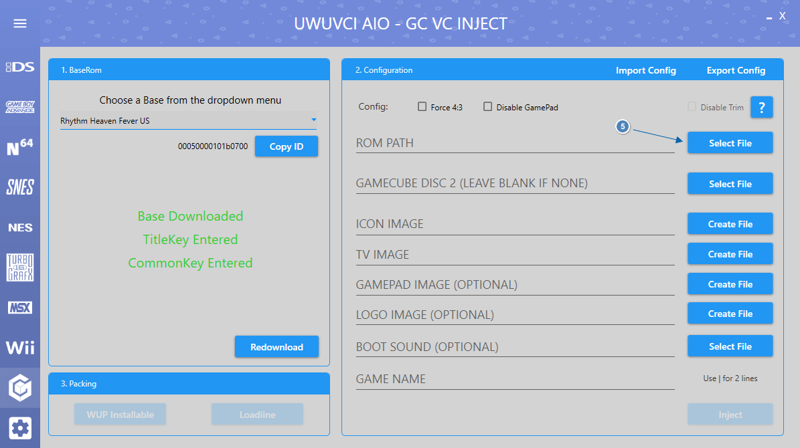
If there are premade images on our server for the Inject then you will be offered to download them.

If there is a second disk for the Inject then select it now.
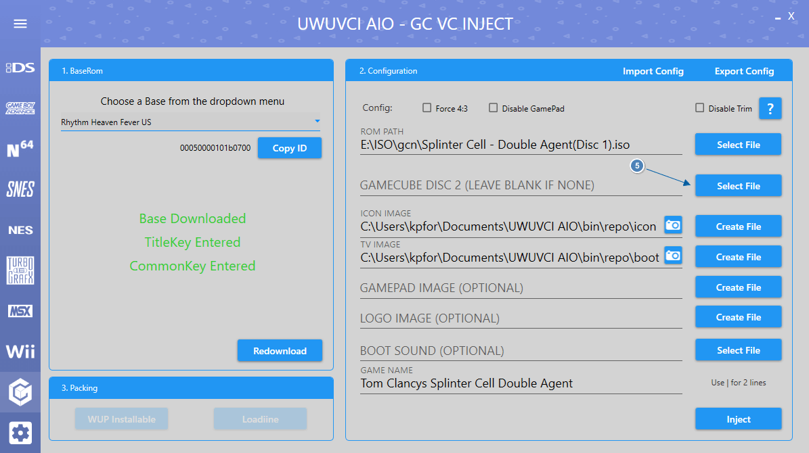
If no images were found on the server in the above step or you wish to add your own custom images then you can do so now.
If no images are selected then it will use the fallback images made for the UWUVCI injector.
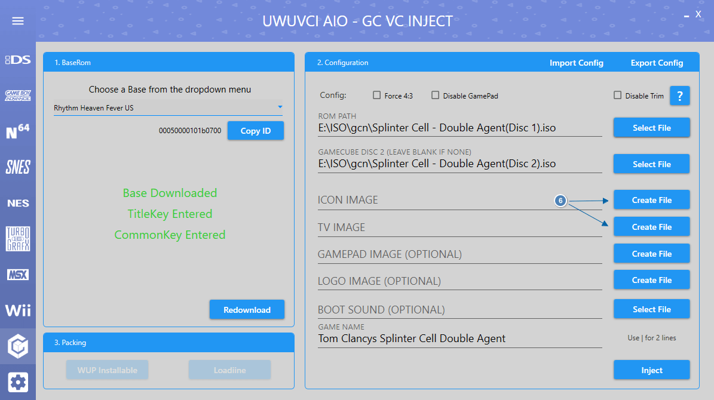
TV IMAGE Creator.
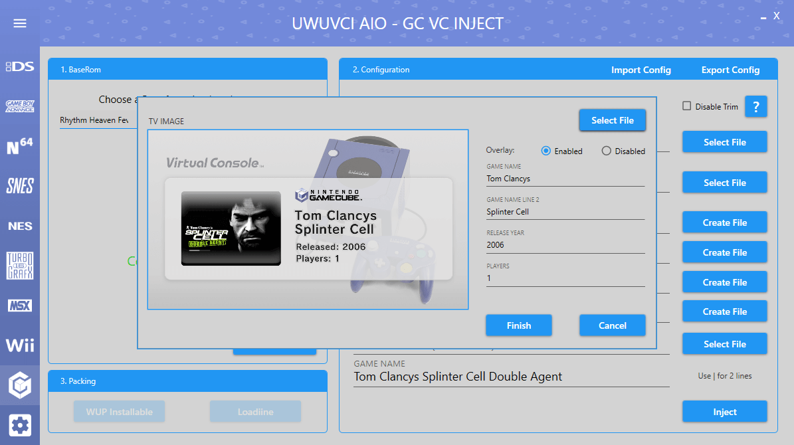
ICON IMAGE Creator.
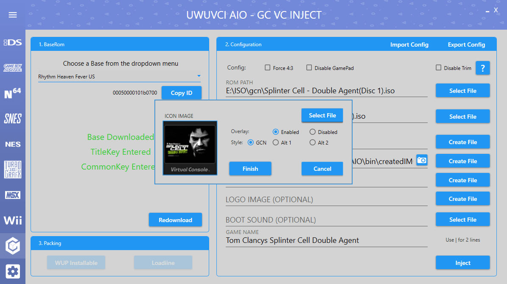
GAMEPAD IMAGE, LOGO IMAGE and BOOT SOUND are all optional.
GAMEPAD IMAGE will be created using the TV IMAGE from above if nothing is selected. The LOGO IMAGE will use the default if nothing is selected.
BOOTSOUND can be a WAV, MP3 or BTSND. The bootsound is the first 6 seconds that play when launching the inject.
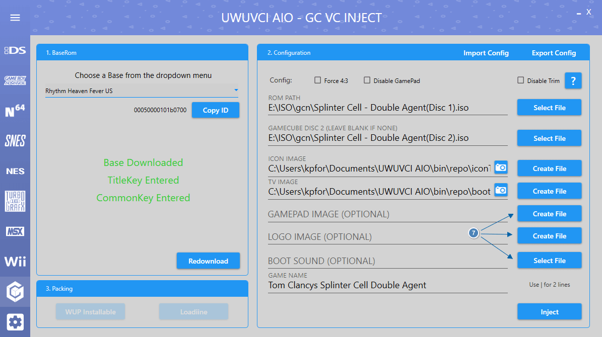
Game Name can be set to whatever you want. If you require 2 lines then seperate the lines with a | .
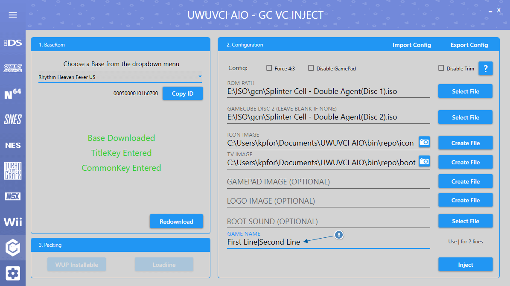
Click Inject and wait for it to be created. This could take a while, depending on the size of your game.
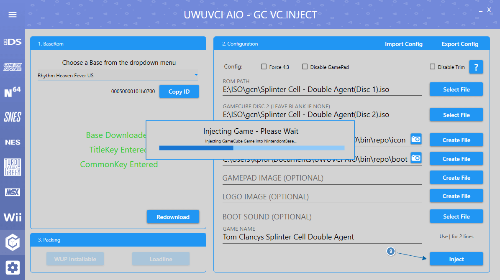
Once Injected select an installable format.
For this guide we will be using WUP Installable which can be installed to Wii U with WUP Installer GX.
Loadiine is for use with Cemu and the old Loadiine GX method of loading games which is slow and not recommended.
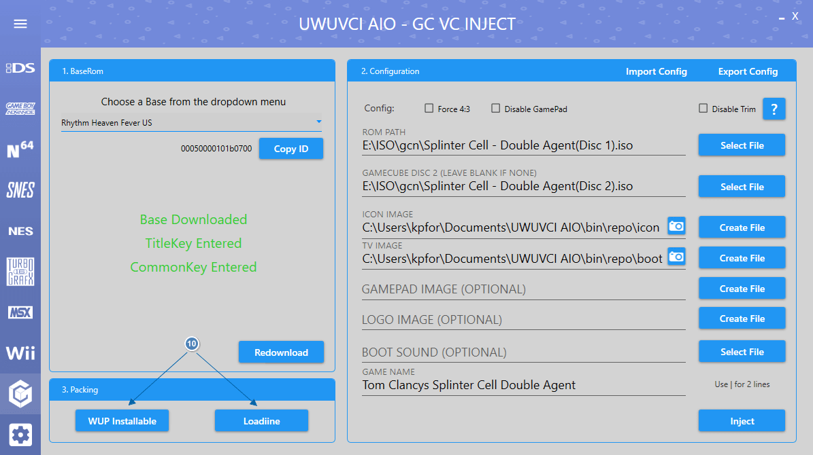
The inject will now be packed into an installable format.
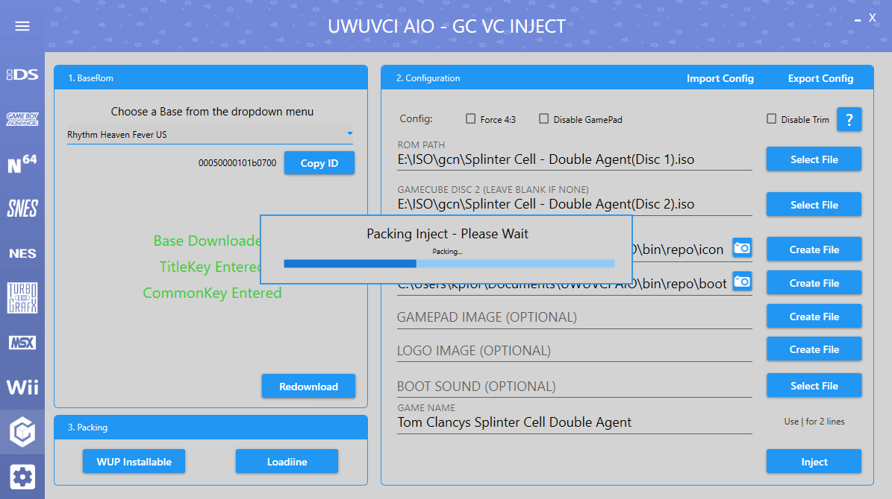
Once WUP Packing is complete you can either click Open Folder or you can click SD Setup to automatically copy the files to SD.
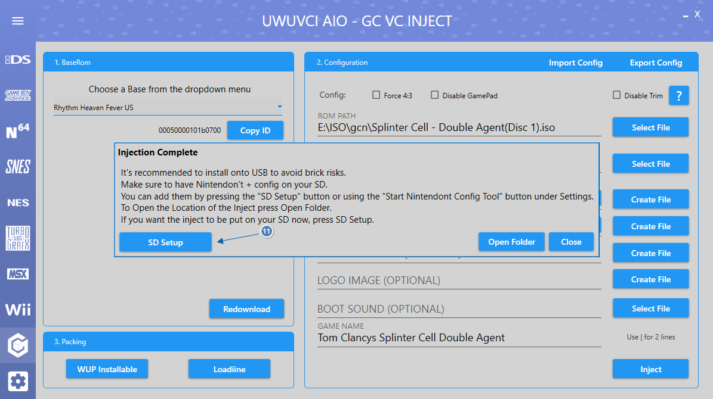
Select your SD card from the dropdown box and click Setup SD Card.
This will copy the WUP to the /install folder on SD ready to be installed with WUP Installer GX and also copy Nintendont files if missing.
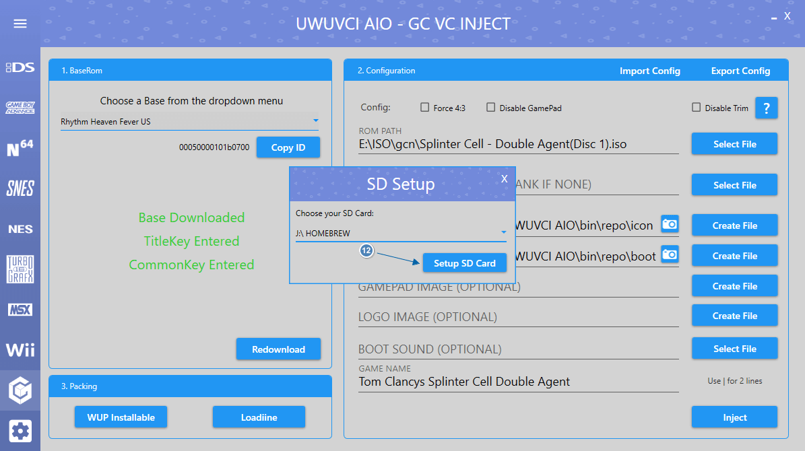